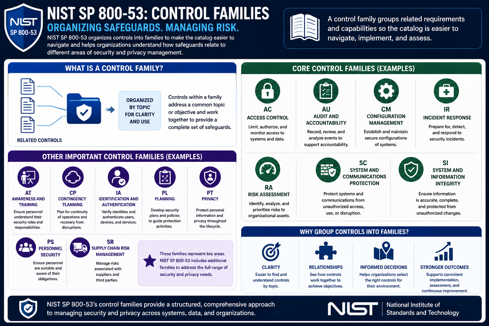

What Is NIST SP 800-53?
Understanding Control Families
Connecting to LMS... Progress: in progress
Version 1.0 | Date: 2026-06-16 | Introductory overview of NIST SP 800-53 security and privacy controls.

Narration
NIST SP 800-53 organizes controls into families. A control family groups related requirements and capabilities so the catalog is easier to navigate.
Examples include Access Control, Audit and Accountability, Configuration Management, Incident Response, Risk Assessment, System and Communications Protection, and System and Information Integrity.
Other families address topics such as awareness and training, contingency planning, identification and authentication, planning, privacy, personnel security, and supply chain risk management.
Grouping controls into families helps organizations understand how safeguards relate to different areas of security and privacy management.